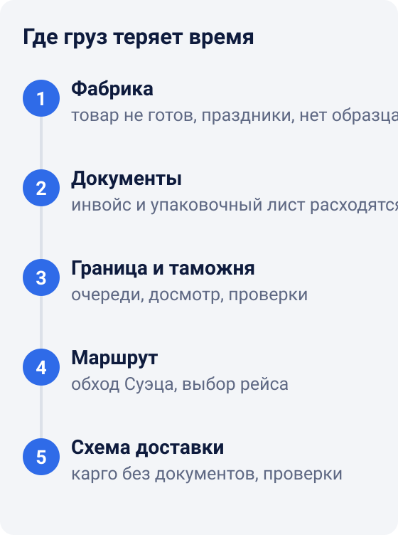
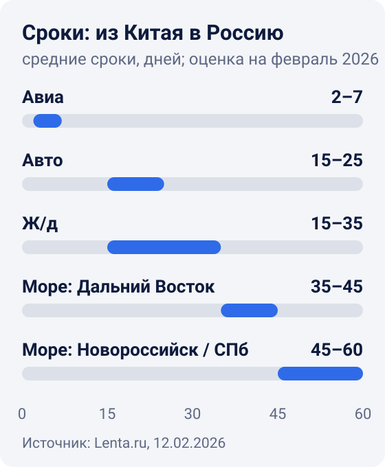
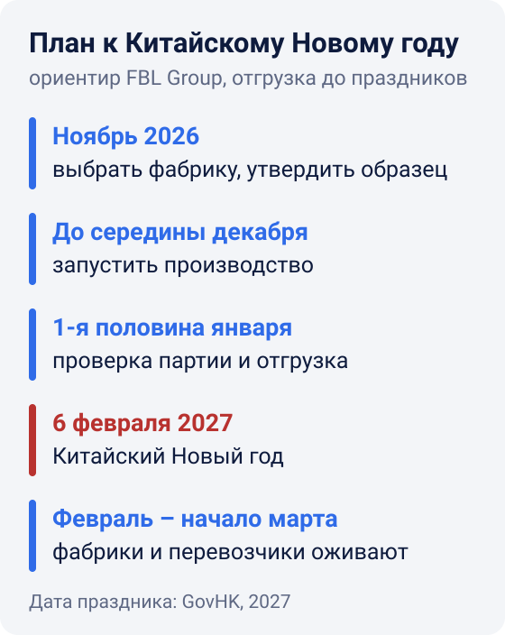

Почему груз из Китая задерживается и как не потерять сроки
Почему задерживается доставка из Китая? Почти всегда по понятным причинам. Время теряется в пяти точках: фабрика, документы, граница, маршрут и сама схема доставки. Если знать эти места, запас можно заранее заложить в план. Тогда не придётся искать виноватых, когда товар уже опаздывает.
Ниже разберём каждую точку, оценки сроков доставки на февраль 2026 года, пример расчёта запаса и план заказа к Китайскому Новому году 2027.

1. Товар не готов вовремя
Часто «задержка доставки» начинается ещё на фабрике: партия просто не готова. Фабрика ведёт несколько заказов одновременно, образец не утвердили вовремя, не хватило материалов. В итоге отгрузка сдвигается на недели, хотя транспорт ещё даже не заказан.
Отдельный риск связан с китайскими праздниками. Китайский Новый год в 2027 году выпадает на 6 февраля3. В 2026 году официальные выходные длились чуть больше недели: начались 15 февраля, а работа возобновилась 24 февраля1. На конец октября 2026 года официальный график на 2027 год ещё не опубликован. В 2026 году перевозчики перешли в дежурный режим ещё до каникул, и многие поставки отложили на время после праздника1.
Октябрьские праздники тоже сдвигают сроки. В октябре 2025 года из-за них у границы Китая, Казахстана и России растянулись очереди на несколько километров1.
Что делать: утвердить образец до запуска, записать дату готовности партии в договор и спрашивать о ходе производства задолго до дня отгрузки.
2. Ошибки в документах
Груз с неточными документами стоит, пока их не исправят. Типичные ошибки: описание товара в инвойсе не совпадает с упаковочным листом, вес и число мест расходятся с фактом, стоимость указана одной суммой без расшифровки.
Требования к данным о грузе ужесточаются:
- Евросоюз. Перевозчик или импортёр заранее подаёт в систему ICS2 данные о безопасности груза (декларацию ENS). По ней каждую партию проверяют на риски ещё до прибытия6.
- США. Беспошлинный ввоз партий до 800 долларов приостановлен на неопределённый срок. Все такие партии, кроме отправленных международной почтой, теперь проходят формальное или упрощённое оформление7.
- Китай. С осени 2025 года в КНР действуют новые правила экспорта: в частности, отгружать товар по чужой экспортной лицензии запрещено1. Если поставщик предлагает отправить груз по чужим документам, из-за этого может застрять и ваш груз.
Что делать: сверить инвойс, упаковочный лист и маркировку коробок до отгрузки. Проще всего это сделать в момент приёмки, когда товар уже пересчитан и упакован.
3. Граница и таможня
При доставке в Россию по суше много времени уходит на погранпереходах. По оценке «Транссертико», после новых мер России и Казахстана проход границы стал занимать в три-четыре раза больше времени1.
Очередь может появиться и без проверок. 3 сентября 2026 года в Забайкальске очередь фур со стороны Китая растянулась примерно на 20 километров. По словам очевидца, причиной стала задержка выдачи разрешений на въезд2.
Что делать: держать запас под границу и не ставить продажи впритык к расчётной дате. Срочную часть партии можно отправить авиа.
4. Маршрут: море и Суэц
Срок морской доставки зависит от маршрута судна. Обход Африки вместо Суэцкого канала добавляет к рейсу Азия - Европа от 9 до 14 дней4. После начала кризиса в Красном море многие линии ходили именно так.
К сентябрю 2026 года часть перевозчиков вернулась в канал. По данным Администрации Суэцкого канала, это CMA CGM, Maersk, MSC, Hapag-Lloyd и COSCO, каждая в разной степени5. Возврат частичный и зависит от обстановки, поэтому маршрут конкретного рейса стоит уточнять при бронировании.
Вот сколько шёл груз из Китая в Россию по оценкам логистических компаний на февраль 2026 года1:

| Способ | Срок, дней | Когда подходит |
|---|---|---|
| Авиа | 2-7 | срочные, небольшие и ценные грузы |
| Авто | 15-25 | баланс сроков и цены на сухопутных маршрутах |
| Ж/д | 15-35 | крупные партии по суше |
| Море через Дальний Восток | 35-45 | большие объёмы, когда цена важнее скорости |
| Море через Новороссийск или Санкт-Петербург | 45-60 | то же, с доставкой в европейскую часть России |
5. Карго и «серые» схемы
Карго-перевозки ценили в том числе за возможность растаможить товар по другим кодам ВЭД (кодам товара в таможенной классификации), с более низкой стоимостью1. Привлекали они и скоростью: до ужесточения контроля осенью 2025 года карго шло из Китая в Россию до 10 дней, а «белая», то есть официальная, доставка - до 50 дней1. Теперь власти России, Китая и Казахстана борются именно с такими неофициальными схемами, в том числе с карго1.
Риск не только в сроках. Если груз ехал без документов, оформленных на вас, при проверке будет сложно подтвердить, что товар ваш и ввезён законно.
Что делать: для регулярных поставок и продаж через маркетплейсы выбирать доставку с полным пакетом документов. По срокам она медленнее, зато её проще планировать.
Почему доставка из Китая подорожала
Сроки и цена связаны. По оценке одной из логистических компаний, в начале 2026 года перевозка из Китая в Россию стоила на 5-10% дороже, чем в конце 2025-го1. К тому же ноябрь и декабрь - сезонный пик. В декабре тариф может расти каждый день и превышать обычный в 1,5-2 раза1.
Вывод простой: декабрьская отгрузка может оказаться дороже и дольше. Если её можно сдвинуть раньше пика или после китайских праздников, вы сэкономите и деньги, и нервы.
Как посчитать запас: пример
Допустим, товар нужен в Москве к 1 марта 2027 года, и вы везёте его по железной дороге. По оценкам на февраль 2026 года ж/д шла от 15 до 35 дней1.
- По нижней границе хватило бы отгрузки 14 февраля.
- По верхней границе отгружать нужно не позже 25 января.
Планировать стоит по верхней границе, и даже она не худший случай: это средняя оценка, а растаможка и доставка до склада в неё не входят. К тому же 25 января уже близко к празднику 6 февраля, а в 2026 году перевозчики перешли в дежурный режим ещё до начала каникул1. Поэтому мы советуем отгружать такой заказ в первой половине января.
План заказа к Китайскому Новому году 2027

Сроки зависят от товара и фабрики, это ориентир, а не гарантия. Главное правило: начинать в ноябре. В январе начинать уже поздно.
Груз уже задерживается: что делать
Паника тут плохой помощник. Действуйте по порядку.
- Выясните точный этап. Ответа «едет» мало: нужно знать, где именно груз - фабрика, склад отправителя, погранпереход, таможня или склад получателя. От этапа зависит всё остальное.
- Попросите номер отправки и копии документов. Инвойс, упаковочный лист, транспортную накладную. Если документов, оформленных на вас, нет, это первый сигнал риска.
- Узнайте причину и новую дату. Очередь, досмотр, ошибка в бумагах, нет машины или вагона. Ошибку в бумагах можно исправить, а с очередью почти ничего не сделать.
- Пересчитайте продажи. На сколько дней хватит текущего остатка и когда он закончится.
- Решите, нужна ли подстраховка. Иногда выгоднее докупить небольшую партию и отправить её авиа, чем остаться с пустым складом на маркетплейсе.
- Запишите выводы для следующего заказа. Где сорвалось, какой запас был нужен, какие документы проверить заранее.
Что спросить у логиста до отгрузки
- По какому маршруту и через какой переход пойдёт груз?
- Какой срок вы закладываете: средний или с запасом под границу?
- Кто проверяет инвойс, упаковочный лист и маркировку до отправки?
- Какие документы я получу и кто в них указан получателем?
- Как я узнаю, где груз, и кто сообщит о задержке?
- Что будет, если груз задержат у границы или назначат досмотр?
Если ответы уклончивые, срок, скорее всего, тоже «плавающий».
Короткий чек-лист
- Утвердить контрольный образец до запуска производства.
- Записать в договор дату готовности партии.
- Сверить документы и маркировку до отгрузки.
- Проверить партию ещё в Китае, до отгрузки.
- Выбирать способ доставки по сроку продажи, а цены сравнивать уже среди подходящих.
- Считать по верхней границе срока и учитывать праздники.
- Срочную часть отправить авиа, остальное - более дешёвым способом.
- Следить за грузом по номеру отправки.
Часть этих этапов FBL Group может взять на себя. Мы принимаем товар на свой склад в Китае, проверяем количество и качество. Затем упаковываем и наносим маркировку (это наш фулфилмент) и подбираем маршрут: авиа, авто, ж/д или море. Чем мы занимаемся и где работаем, рассказано на странице о компании. Чтобы обсудить вашу поставку, оставьте заявку.
Источники
- Lenta.ru. Доставка товаров из Китая сильно замедлилась и подорожала. Почему грузы идут в обход Казахстана и к чему готовиться россиянам?, 12.02.2026 — сроки, цены и оценки логистических компаний.
- Чита.Ру. Очередь из фур на МАПП «Забайкальск» растянулась на 20 километров, 04.09.2026.
- GovHK. General holidays for 2027 — официальный календарь праздников Гонконга (на английском).
- Lloyd's List. Boxships on Europe-Asia trade rerouted to avoid Suez Canal fees (14.12.2022, на английском).
- gCaptain. Container Shipping Returns to Suez Despite Rising Red Sea Risks, 16.09.2026 (на английском).
- Европейская комиссия. Import Control System 2 (ICS2) (на английском).
- U.S. Customs and Border Protection, Federal Register. Indefinite Suspension of the De Minimis Exemption for Merchandise Arriving Through All Modes Other Than the International Postal Network, 24.06.2026 (на английском).
Ссылки проверены 26 октября 2026. Статья — общие рекомендации, а не юридическая консультация.